Etapa 9 • Tela 09 — Tóquio como território de expansão
Antes: a linha de metrô sobre fundo escuro, sem cenário. Depois: uma avenida empresarial inspirada em Marunouchi ao entardecer, com prédios de base de pedra e torres de vidro recuadas, ginkgos, postes e, no eixo da avenida, uma estação de tijolo vermelho — o horizonte fica na altura da linha da jornada. A câmera avança pela avenida a cada trecho e sobe na cena de aquisição; as janelas acendem um pouco mais nessa cena. Capturas em 1920 × 1080, salvo indicação.
09.1 • Parceiro local e pilotos

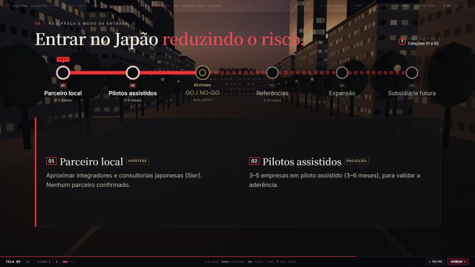
09.2 • Decisão, referências e expansão

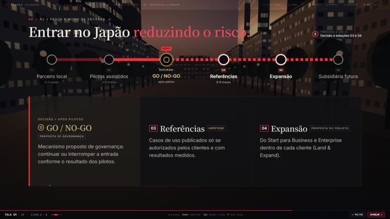
09.3 • Subsidiária futura
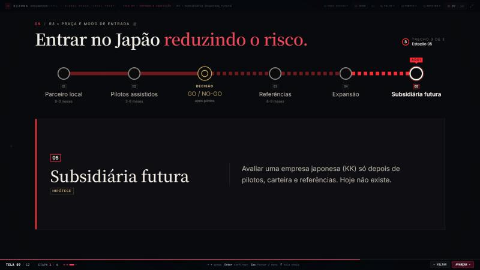
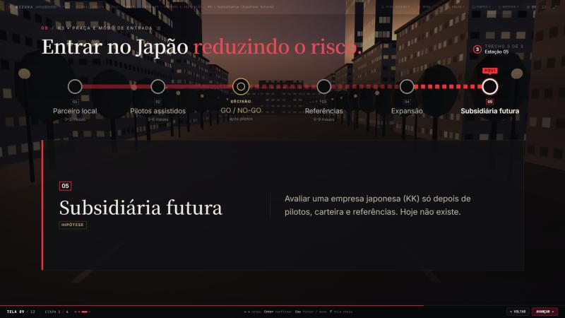
09.4 • Aquisição B2B

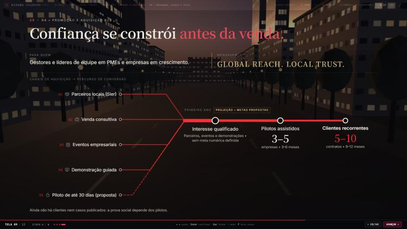
Cenário e outras resoluções
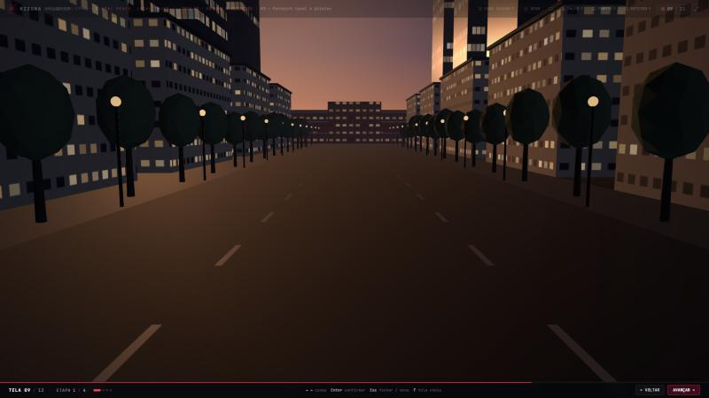
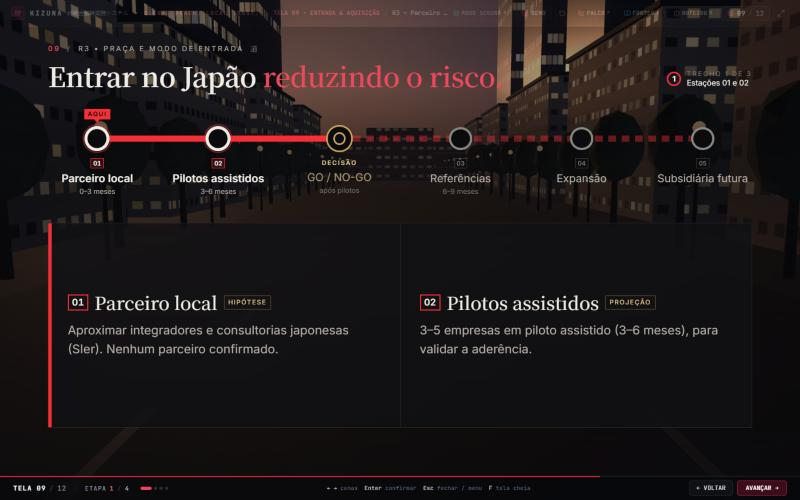
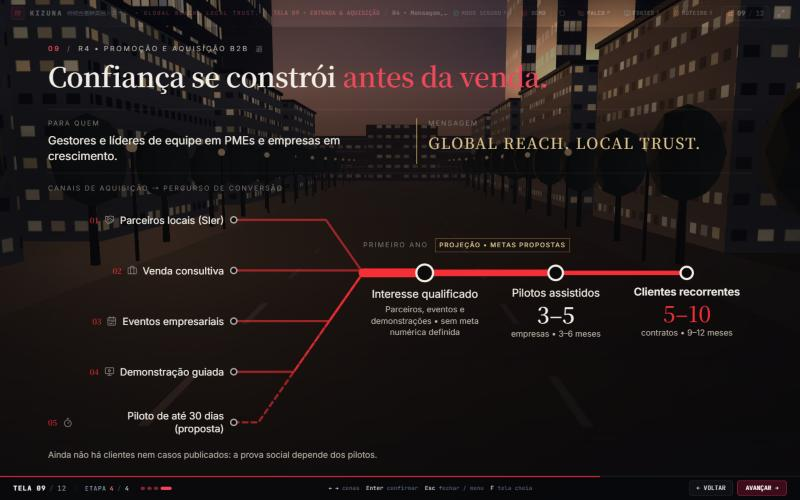
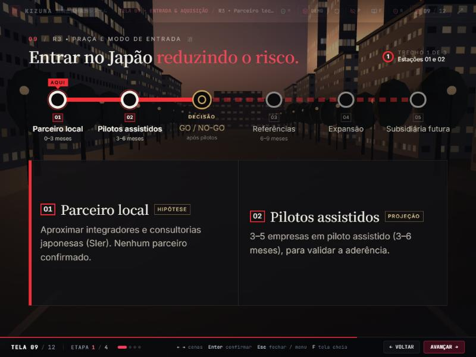
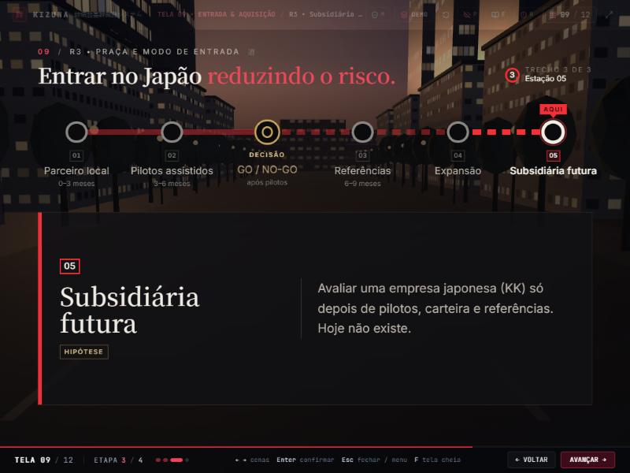
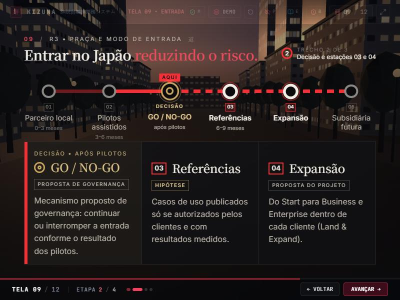
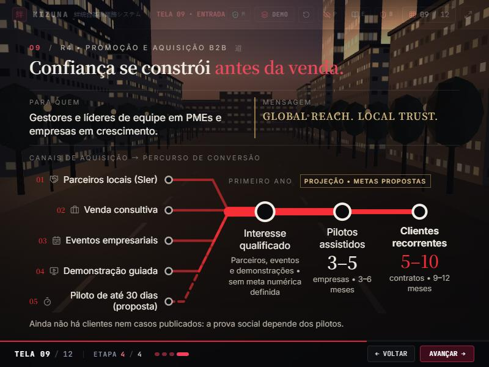